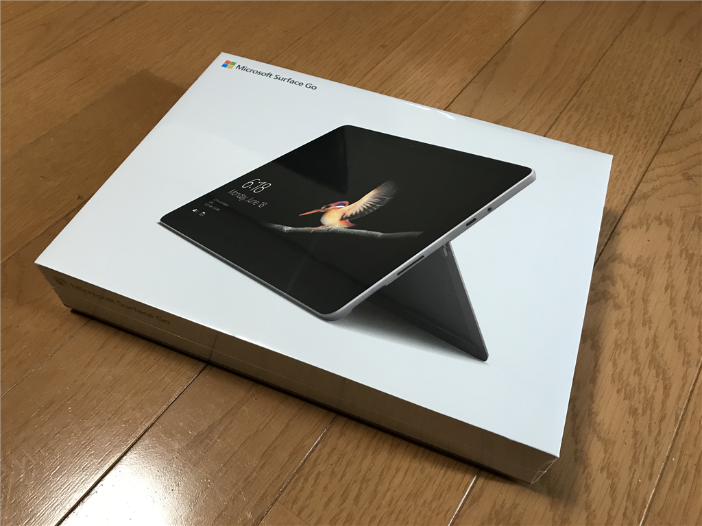
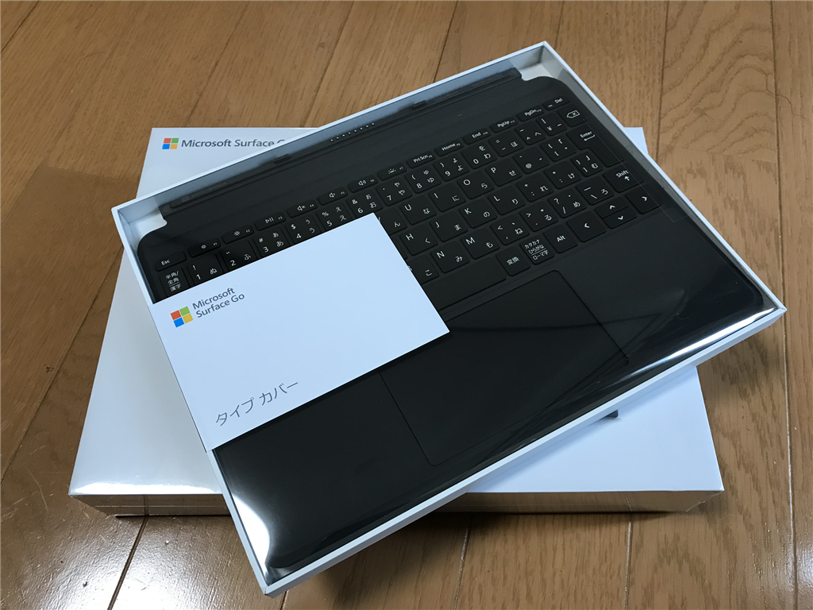
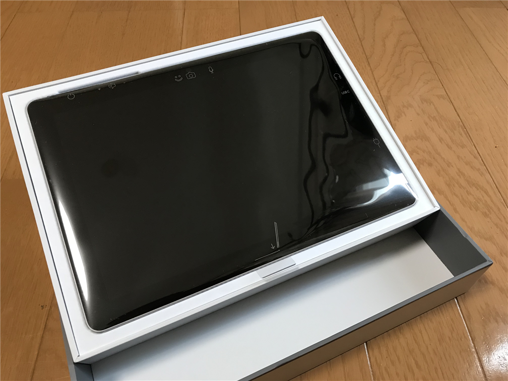
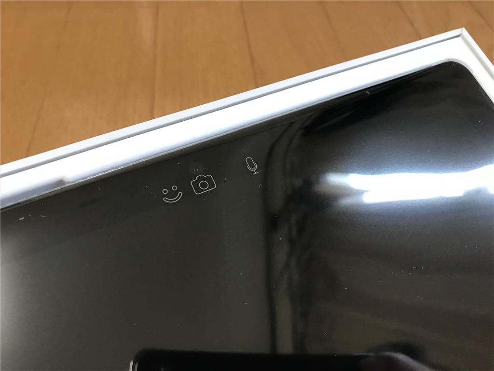
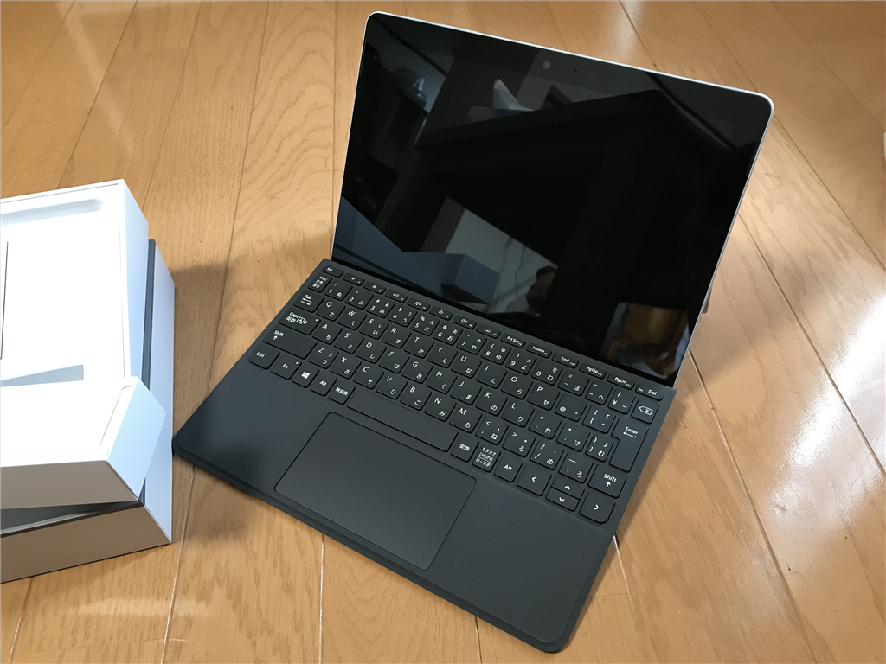

9月29日：Surface Go を親父にセットアップさせる（これは結構いい端末ですね！
公開日：

最近、うちの親父が「お前のヤツ（Surface 3）いいなぁ、Laptop と交換してほしいなぁ」などという。父は Surface 3 のモバイル性を評価してるみたいだけど……この Surface 3 は購入後だいぶ経つし、ドックに入れてないと充電ができないことがある。海外出張にドックまで担いでいく気か？（結構重いんだけど）
――ってなわけで、Surface Go をサプライズで買ってあげました。あくまで貸与なんだからねっ！ デバッグ用に S モード端末が欲しくなっただけなんだからねっ！
まぁ、それまで貸与していた Surface Laptop と、ついでに活用してなさそうな iPad Pro を代わりに召し上げるので、トータルでは儲け。Surface Laptop は余るんだけど、妹に電話したら「寄越せ」というのでそっちに引き取ってもらうことになりそう（買いたたかれそうだなぁ……）。iPad Pro（デカいヤツ、LTE 付き）も売っちゃおうかな、mini 4 の方がサイズ的には断然好きだし。こっちは Surface Go が買える値段ぐらいで売れそう。Apple 製品はリセールバリューの高さが魅力だね。
それはそうと、今回勝った Surface Go。S モードの実験端末がほしかっただけなので、基本的には最低スペックです。
 シルバー MHN-00014")
マイクロソフト Surface Go(4GB/64GB) シルバー MHN-00014
- 出版社/メーカー: マイクロソフト
- 発売日: 2018/08/28
- メディア: エレクトロニクス
- この商品を含むブログ (1件) を見る

Surface Go タイプ カバー ブラック KCM-00019
- 出版社/メーカー: マイクロソフト
- 発売日: 2018/08/28
- メディア: エレクトロニクス
- この商品を含むブログを見る
Surface Go はタイプカバー付きで 82,720 円（ヨドバシポイントで1割ほどバック）。Surface Go は安い、安いと話題になりましたが、結局タイプカバー（12,000 円程度）を買い足さなきゃいけないので、そんなに安くは感じません。ソフトウェアキーボードだけでも十分使える iPad には負けますね。

あと、日本向けに強制バンドルされて不評な Microsoft Office ですが、商用 Office 365 を契約してる自分ならともかく、そうではない親父にはうれしいでしょう。Excel だけは必要みたいだし。

開けてみたときまずもった印象は、「小さいなぁ」。タブレットは iPad mini 4 を愛用しているので、それと比べると一回り大きく、そして分厚いですが、歴代 Surface のラインナップのなかでは抜群のコンパクトさ。これは十分持ち運びに耐えうるな、という印象です。個人的には Arm な LTE 付き UMPC を一台ほしいのですが、もし出てこないのであればこれでもいいと感じます。

フィルムカバーが半ば機能説明書になってるのも、個人的には好ましく感じます（前からだっけ？ 覚えてないや！）。親父にはこれを指さして一通りの機能を説明しました。

タイプカバーは Surface 3 のものに比べるとタッチパッドが広くてよさそうです。Surface 3 のものは狭すぎて、3本指ゼスチャーなんてほぼ不可能でしたから。おそらくキートップの縦幅はかなり詰まっているのだと思いますが、打ちにくさは感じません。ブログ端末のキーボードとしては合格点があげられるんじゃないかな。
父が iPad よりも Surface を好むのは
- Excel を使うことがある
- メールで圧縮ファイルを扱う
- 競艇の舟券購入サイト（Flash）を使う
ためなのですが、
- 音声ジャックがある（手持ちの外部スピーカーが使える。iPad は変換コネクターが必要）
- LINE が使える（モバイルと同時に！）
点も評価していました。S モードで Kindle が読めないのはかなり致命的なのではないかと心配していたのですが、なにやら Oasis を自分で買ったらしく、そこは問題にならないようです。画面が小さいのは少し気になるらしく、毎回ウィンドウを最大化して使っているのが気になったので、“タブレット モード”の存在を教えてやると大変喜んでいました。スタート画面も全画面になり、指で操作しやすくなります。パワーユーザーを中心に評価が低い“タブレット モード”“全画面スタートメニュー”は、こういう小さめのタブレットではかなり有用です。声の大きいユーザーに惑わされず、地道な改善を続けてほしいと願ってやみません。
しかし、Office のセットアップ体験は落第点ですね。
Surface Go、親父に使わせてるけど Office のライセンスキーが入力できない
— だるやなぎ准将 (@daruyanagi) September 29, 2018
・字が小さくて見えない
・大文字小文字は区別あるのか？
・ハイフンは自分で入れるのか？
・最後がスクラッチになっているのに気づかない
・追加で Office 365 に加入しなきゃ使えないのか？ と不安になる pic.twitter.com/zf84xqVQoD
事情は察しますけど、Amazon が Kindle にあらかじめアカウント情報を仕込んで出荷してくれるこの時代に（クレカなんかカードが届く前に Amazon で使えるようになるんだぜ？）、この手間は致命的です。ライセンスキーを入力した状態で出荷してもよいぐらいだと思います。まぁ、それはそれで上級者は文句を言うでしょうけどね。
あと、
- USB が type C しかない
という点には不安を感じるとも言っていました。まぁ、うちの父はそれほどデジタルガジェット持ちではないので、そんなに困らないんじゃないかって自分なんかは思いますけど。でも、プレゼン端末に使いたい人は、HDMI ケーブルか何かを買い足ししなきゃいけないでしょうね。
まぁ、いろいろともかく、Surface Laptop が大きすぎて、ときどきボロボロになった Surface 2 で競艇を楽しんでいた父にとって、Surface Go は最適な端末になったみたいです。自分ではまだあまり触っていないのですが、横でずっとレクチャーしながらみていた限り、個人的にも「アリ」な端末だと思います。LTE 版（年末リリースかな？）が出たら自分が普段使いするために買ってもいいな……ただ、Office はつけなくていい。その分安くするか、Windows 10 Pro にしておいてくれるとうれしいです。
追伸
Surface 2（Windows 8.1 RT）の頃にあった、サイトをスタート画面にピン留めする機能ってなくなったんですかね。ちょっと見当たらなかったんですけど……親父は結構その機能が気に入っていたみたいなので、知ってる方がいれば教えて下さい。S モードなのでトリッキーな方法はナシでね。